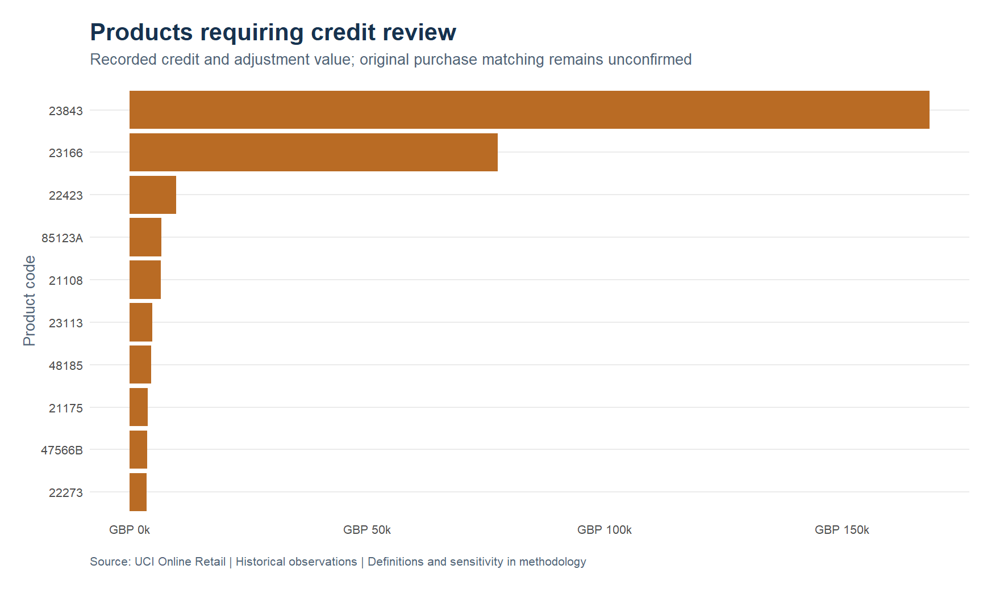
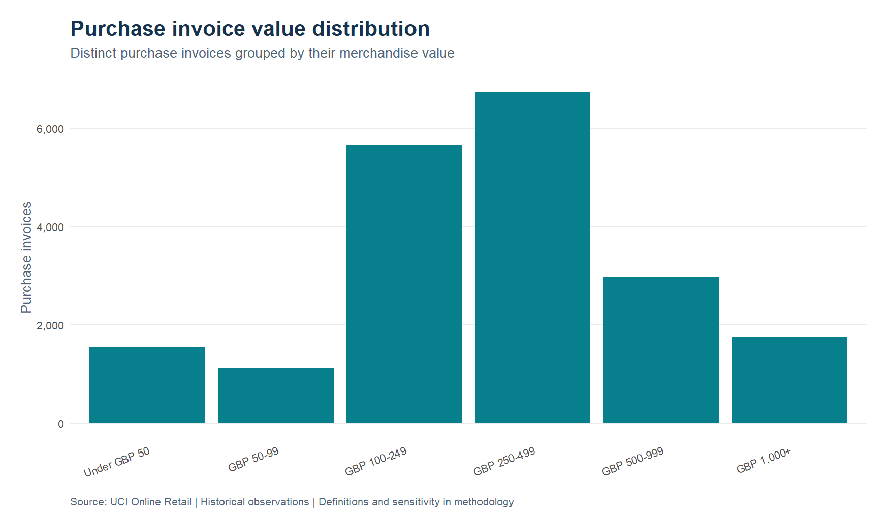
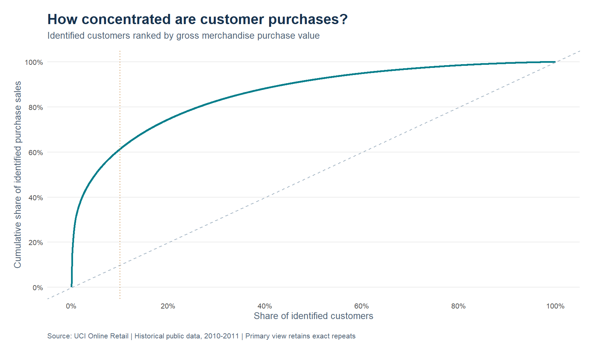
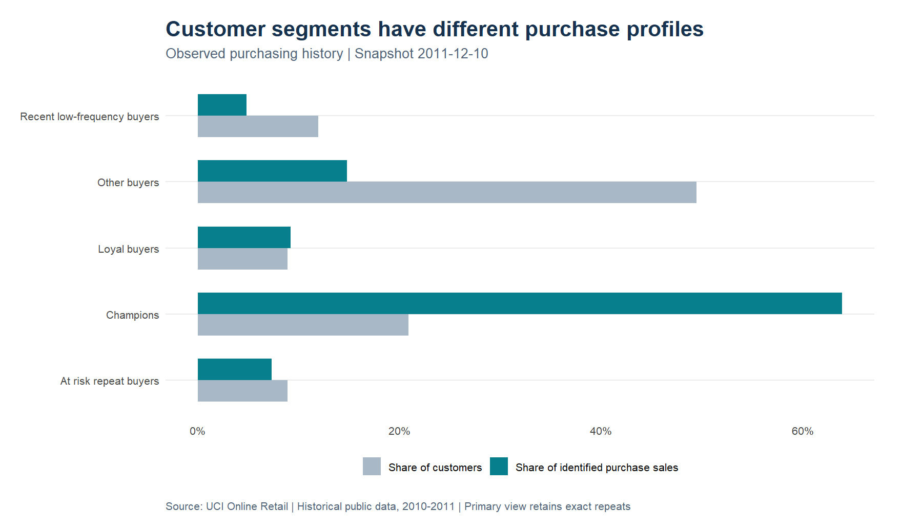
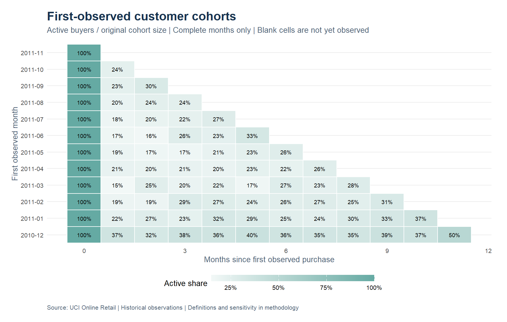

Understand what the sales ledger is telling you.
Explore purchases, credits and customer patterns across 541,909 invoice lines. Every result has an explicit scope and a reproducible path back to the original data.
Start with the right comparison.
The final month is partial. Customer IDs are incomplete. Large purchases can have corresponding credits. The analysis makes these distinctions visible before recommending action.
Sales explorer
Change the market or period to inspect merchandise purchase value and recorded credits. The primary view retains exact repeated rows.
- Merchandise purchases
- Recorded credits
- Sales less credits
- Identified purchase coverage
Review product sales alongside credits.
Use the ranking to form an investigation list. Purchase value alone cannot establish profitability or replenishment priority.


Customer concentration and purchasing cohorts


First-observed cohorts
Each cell shows the share of a cohort buying in that month. The first observation is not confirmed acquisition. Unobserved future periods remain blank.

Do conclusions change under another purchase policy?
Turn findings into measurable tests.
Credit investigation
Obtain original-invoice references and return reasons before netting individual purchases. Ambiguous groups remain unresolved.
Retention pilot
Refresh customer history, define eligibility and contact permission, then compare a campaign with a holdout group. Measure incremental orders and contribution after contact and discount costs.
Illustrative retention contribution
This is an editable assumption calculation, not a forecast or measured campaign result. Replace every assumption with pilot evidence before using it.
Methods and evidence
How are purchases and credits defined?
Every row receives one ledger class. Nonpositive prices and administrative codes are separated. Merchandise candidates match five digits followed by optional letters. Positive lines are purchases; negative merchandise quantities are credits or adjustments. A product master is needed to confirm operational eligibility.
Why preserve repeated rows?
The file has no unique invoice-line identifier. Primary results keep exact repetitions, while a separate sensitivity view removes later exact repeats. The analysis does not assume every repeated line is an error.
What can the results support?
The study supports reporting checks, investigation priorities and pilot design. It contains no margin, inventory, marketing exposure or campaign outcomes. It does not measure causal effects or realised savings.